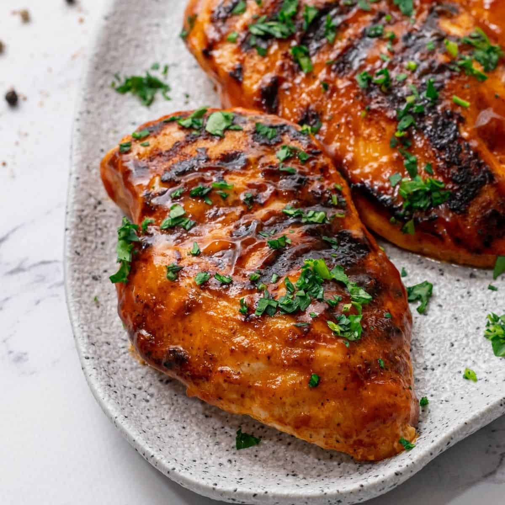

Barbecue Chicken

Description
Get ready to fire up your grill and savor the taste of summer with this delectable Barbecue Chicken Breast recipe. Tender, juicy chicken breasts are marinated in a mouthwatering blend of smoky barbecue sauce, tangy spices, and a touch of sweetness. The result is a dish that boasts the perfect balance of flavors, leaving you and your guests wanting more.
Ingredients
- 4 boneless, skinless chicken breasts
- 1 cup barbecue sauce (homemade or store-bought, choose your favorite)
- 2 tablespoons olive oil
- 2 tablespoons honey
- 2 tablespoons soy sauce
- 2 cloves garlic, minced
- 1 teaspoon smoked paprika
- 1/2 teaspoon cayenne pepper (adjust to your preferred level of spiciness)
- Salt and pepper
- Fresh parsley or green onions, chopped (for garnish)
Steps
- In a bowl, prepare the marinade by combining barbecue sauce, olive oil, honey, soy sauce, minced garlic, smoked paprika, cayenne pepper, salt, and pepper. Mix well until all the ingredients are thoroughly combined.
- Place the chicken breasts in a resealable plastic bag or a shallow dish. Pour the marinade over the chicken, ensuring each piece is well coated. Seal the bag or cover the dish and refrigerate for at least 1 hour (or ideally overnight) to let the flavors infuse the chicken.
- Preheat your grill to medium-high heat. Make sure to clean the grates and lightly oil them to prevent sticking.
- Remove the chicken breasts from the marinade, allowing any excess marinade to drip off. Reserve some of the marinade for basting during grilling.
- Grill the chicken breasts over direct heat, approximately 6-8 minutes per side, or until the internal temperature reaches 165°F (74°C) and the chicken is no longer pink in the center. Baste the chicken with the reserved marinade during the last few minutes of grilling for an extra burst of flavor and to enhance the caramelization.
- Once done, transfer the grilled barbecue chicken breasts to a serving platter and let them rest for a few minutes before slicing.
- Garnish with chopped fresh parsley or green onions to add a pop of color and a touch of freshness.